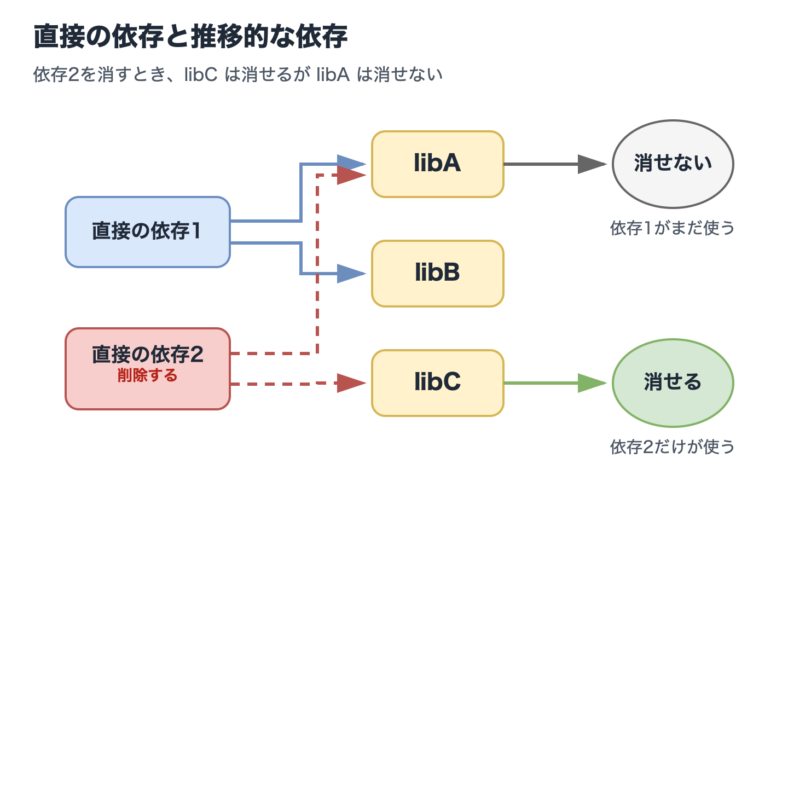
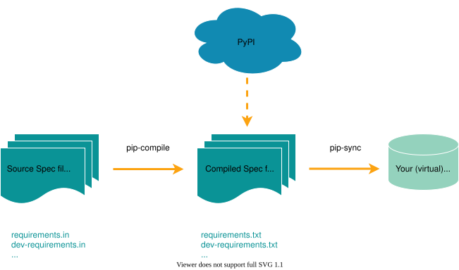

仮想環境からの脱却：2026年に向けたPythonの新しいパラダイム
仮想環境からの脱却：2026年に向けたPythonの新しいパラダイム
- Event:
PythonAsia 2026
- Presented:
2026/03/22 nikkie
こんにちは、PythonAsia！（お前、誰よ）
東京で機械学習エンジニア。Speeda AI Agent 開発（A2A提供） [1]
@ftnext SpeechRecognition (9k⭐️)メンテナ
昔はいつも管理していたのに、今ではほとんど管理しなくてよいもの、なに？
答えは 仮想環境
みなさん、自分の手で仮想環境を管理していますか？🙋
仮想環境を開発者が管理する必要はなくなっている
種々のPythonプロジェクト管理ツール
一時的な仮想環境 を使ったCommand Line Interface (CLI)実行
inline script metadata (PEP 723)
BREAKING NEWS!!
We've reached an agreement to acquire Astral.
— OpenAI Newsroom (@OpenAINewsroom) 2026年3月19日
After we close, OpenAI plans for @astral_sh to join our Codex team, with a continued focus on building great tools and advancing the shared mission of making developers more productive.https://t.co/V0rDo0G8h9
仮想環境からの脱却 目次
仮想環境の基礎
手動で仮想環境管理のつらさ
解決策の進化（メインパート）
2026年現在可能になった解決策
一時的な仮想環境 を使ったCLI実行
inline script metadata (PEP 723)
1️⃣仮想環境の基礎
仮想環境はなぜ私たち（Python開発者）に必要なのか
Pythonチュートリアルより
$ python -m venv .venv --upgrade-deps
$ source .venv/bin/activate
(.venv) $ python -m pip install sampleproject仮想環境とは ディレクトリ
% python -m venv --help
usage: venv ENV_DIR [ENV_DIR ...].venv/ というディレクトリができている% ls -al
drwxr-xr-x@ 7 nikkie staff 224 Mar 20 12:42 .venvなぜディレクトリを作るのか
サードパーティライブラリ のインストール先にするため
仮に仮想環境を使わない場合、インストール先はマシンの中に1箇所
.venv/ には何がある？ [2]
.venv
├── bin
│ ├── activate
│ ├── pip
│ ├── pip3
│ ├── pip3.14
│ ├── python -> python3.14
│ ├── python3 -> python3.14
│ ├── python3.14 -> /Library/Frameworks/Python.framework/Versions/3.14/bin/python3.14
│ └── 𝜋thon -> python3.14
├── lib
│ └── python3.14/
└── pyvenv.cfg.venv/bin/python
マシンにインストールしたPython処理系への シンボリックリンク
activateでは環境変数PATHを更新して、この処理系が見つかるようにしている処理系と標準ライブラリはこちらを使う
.venv/lib/python3.14/site-packages/
サードパーティライブラリのインストール先のディレクトリ
仮想環境ごとに分かれているので、バージョン違いが共存 する
2️⃣俺たちが、仮想環境管理ツールなんだ
$ python -m venv .venv --upgrade-deps
$ source .venv/bin/activate
(.venv) $ python -m pip install sampleproject人力管理のつらみを挙げていく（全4つ）
仮想環境の再現：pip freeze
(.venv) $ python -m pip freeze > requirements.txt$ python -m venv recreate-env --upgrade-deps
$ source recreate-env/bin/activate
(recreate-env) $ python -m pip install -r requirements.txt依存ライブラリには2種類ある
(.venv) $ % python -m pip install httpx(.venv) $ python -m pip freeze
anyio==4.12.1
certifi==2026.2.25
h11==0.16.0
httpcore==1.0.9
httpx==0.28.1
idna==3.11課題1: pip freeze の出力は扱いが難しい
directな依存もtransitiveな依存も1つの
requirements.txtにまとまるdirectな依存にextraを指定 [3] していた場合、
requirements.txtでは extraの情報は失われる
課題2: 特定のパッケージをアンインストールしづらい
directな依存を消す際、transitiveな依存の削除 が大変
直接の依存1は libA, libB に依存
直接の依存2は libA, libC に依存

課題3: スクリプトごとの仮想環境が増殖
気になるライブラリをquickstartしたいだけだが、毎回仮想環境を作ることになる
.
├── .venv/
└── script.py課題4: リンタやフォーマッタが仮想環境ごとに
開発中に使うCLIを どの仮想環境にも都度 インストールする
どのプロジェクトでも最新に保つのが大変
仮想環境管理ツール、俺たちが抱えるペイン
directもtransitiveも1つにまとまる
pip freezedirectを消すとき一緒にどのtransitiveも消せる？
スクリプト用の仮想環境いくつも
CLIを仮想環境に都度インストールして最新化
3️⃣コミュニティがこれらの課題にどう対応してきたか
directもtransitiveも1つにまとまる
pip freezedirectを消すとき一緒にどのtransitiveも消せる？
スクリプト用の仮想環境いくつも
CLIを仮想環境に都度インストールして最新化
pip-tools
pip freezeに代えて pip-compile & pip-sync [4]

pip-tools のワークフロー
requirements.in に書くhttpx課題1: directもtransitiveもまとまるが解消します
pip-tools のワークフロー
requirements.txt (direct & transitive)を生成anyio==4.12.1
# via httpx
certifi==2026.2.25
# via
# httpcore
# httpx
h11==0.16.0
# via httpcore
httpcore==1.0.9
# via httpx
httpx==0.28.1
# via -r requirements.in
idna==3.11
# via
# anyio
# httpxpip-tools のワークフロー
pip-sync で
requirements.txtに仮想環境を一致させるrequirements.inの directな依存の指定を変えて、requirements.txtも仮想環境も変える（課題2も解消）
Poetry
$ poetry new
$ poetry add httpx
$ ls
poetry.lock pyproject.toml仮想環境をより意識しない [5]
poetry run とつけるだけで仮想環境で実行$ poetry run python -m pip freezePythonプロジェクト開発で受け入れられてきた印象（2020年前後） [6]
Rye [7]
Rust製（Python製ツールより高速）
Python自体の管理 + 仮想環境管理
$ rye init
$ rye add httpx
$ rye syncそしてuv
pipのRust実装として登場。drop-in replacement for pip and pip-tools workflows.
Pythonもプロジェクトの仮想環境も管理できるように [9]
$ uv init
$ uv add httpx
$ uv syncuvへと至る流れ
Poetry（やPipenv）が Pythonプロジェクトの仮想環境管理 を簡単に
Rust製のRye：Pythonの管理 も（仮想環境管理はpip-tools）
Ryeの機能に pipx や PEP 723 を取り込んだuvへ（このあと紹介）
3️⃣-1️⃣ 仮想環境管理不要のCLI実行
課題4「CLI を仮想環境に都度インストールして最新化」へのアプローチ
Ruffを例にしますが、PyPI上のあらゆるCLIに適用可能
Before：仮想環境にインストールしてからCLI実行
$ # python -m venv .venv --upgrade-deps
$ source .venv/bin/activate # プロジェクトの仮想環境
(.venv) $ python -m pip install ruff
(.venv) $ ruff format今は一時的な仮想環境を使ったCLI実行が可能
uvx ruff format （
uv tool run ruff format） [10]または pipx run ruff format
インストール方法
curl -LsSf https://astral.sh/uv/install.sh | shbrew など システムのパッケージマネージャ優先 で [12]python3 -m pip install --user pipxツールが一時的な仮想環境にインストールしている
デモ 手動 venv vs uvx
$ python -m venv format-env --upgrade-deps
$ source format-env/bin/activate
(format-env) $ python -m pip install ruff
(format-env) $ ruff format$ uvx ruff formatuvx や pipx run のススメ
私たちが仮想環境を触ることがない（ツールが代わってくれる）
管理の手間なくCLIの最新バージョン が使える
複数プロジェクトで横断的に使える（課題4解消）
私はこんなところで使ってます [15]
$ uvx cookiecutter gh:simonw/llm-plugin$ uvx --from sphinx --with sphinx-new-tab-link \
sphinx-build -M html source build$ pipx run build
$ pipx run twine check dist/*FYI：マシンにグローバルインストールもできます
uv tool install
pipx install (Installing stand alone command line tools)
ただし手動でアップグレードが必要（uv tool upgrade・pipx upgrade-all）
3️⃣-2️⃣ inline script metadata
課題3「スクリプト 用の仮想環境いくつも」へのアプローチ
あらゆるPythonスクリプトに適用可能
https://packaging.python.org/en/latest/specifications/inline-script-metadata/
サードパーティライブラリを使ったスクリプト
from datetime import datetime
import httpx
from rich.pretty import pprint
resp = httpx.get("https://peps.python.org/api/peps.json")
data = resp.json()
peps_desc_created = sorted(
data.items(),
key=lambda item: datetime.strptime(item[1]["created"], "%d-%b-%Y"),
reverse=True,
)
pprint([(k, v["title"], v["created"]) for k, v in peps_desc_created][:10])
Before：仮想環境に依存をインストールしてからスクリプト実行
$ python -m venv .venv --upgrade-deps
$ source .venv/bin/activate
(.venv) $ python -m pip install httpx rich
(.venv) $ python script.pyPEP 723 – Inline script metadata [17]
# /// script
# requires-python = ">=3.13"
# dependencies = [
# "httpx",
# "rich",
# ]
# ///
inline script metadataをサポートするツールで実行するだけ
ツールが依存をインストールした仮想環境を用意して実行
ツールがmetadataを読み
requires-python に沿った Python処理系 で
dependencies をインストールした 一時的な仮想環境 を用意して、スクリプト実行
uvはinline script metadataを書き込む！ [20]
uv add --script script.py httpx rich [21]
# /// script
# requires-python = ">=3.13"
# dependencies = [
# "httpx>=0.28.1",
# "rich>=14.3.3",
# ]
# ///デモ 手動 venv vs uv run script.py
$ python -m venv script-env --upgrade-deps
$ source script-env/bin/activate
(script-env) $ python -m pip install httpx rich
(script-env) $ python script.py$ uv add --script script.py httpx rich
$ uv run script.pyinline script metadataのススメ
私たちが仮想環境を触ることがない（ツールが代わってくれる）（課題3解消）
スクリプトが依存を語る
別のマシンでも 簡単に再現実行 できる [23]
私はこんなところで使ってます
最後に、ツール選定
Poetry以来のPythonプロジェクト管理も踏まえて
uv🏅
Hatch❤️
Poetry
Poetryがだいぶ楽にしてくれた（CLI実行やスクリプト実行の課題が残った）
最新の仕様に即時追従できていない状況（オススメしづらい）
uv🏅
pyproject.toml を強制）$ uv add httpx
$ uv sync1つのツールで
uvxや inline script metadata まで 広くサポート するので現時点で最有力
Hatch
Pythonプロジェクト管理もサポートするが、複数の仮想環境 を管理する形式
inline script metadata も使えるが、
uvx相当の機能はない
Hatchは興味深い❤️
$ hatch env show
Standalone
┏━━━━━━━━━┳━━━━━━━━━┳━━━━━━━━━━━━━━┳━━━━━━━━━┓
┃ Name ┃ Type ┃ Dependencies ┃ Scripts ┃
┡━━━━━━━━━╇━━━━━━━━━╇━━━━━━━━━━━━━━╇━━━━━━━━━┩
│ default │ virtual │ │ │
├─────────┼─────────┼──────────────┼─────────┤
│ types │ virtual │ mypy>=1.0.0 │ check │
└─────────┴─────────┴──────────────┴─────────┘uvはじめ多くはPythonプロジェクトに1つだけの仮想環境
まとめ🌯 仮想環境 人力管理 からの脱却
サードパーティライブラリのインストール先として仮想環境の重要性は変わらない
しかし現在では、仮想環境を 開発者が管理する必要はなくなって いる
開発者は手動の仮想環境管理から 解放 されている
CLI実行：ツールが一時的な仮想環境にインストールして
スクリプト実行：inline script metadata
早速試して 楽して こーぜ
uv (
uvx,uv run)pipx (
pipx run)
仮想環境を作るコマンドって初学者チュートリアルに必要？
Pythonチュートリアルや入門書は見直すタイミングではないか
IMO：Pythonで スクリプトを書きたい初学者にはスキップ していいのでは（inline script metadata）
プロのPython開発者には仮想環境を理解するのを推奨
ご清聴ありがとうございました
Happy Python Development